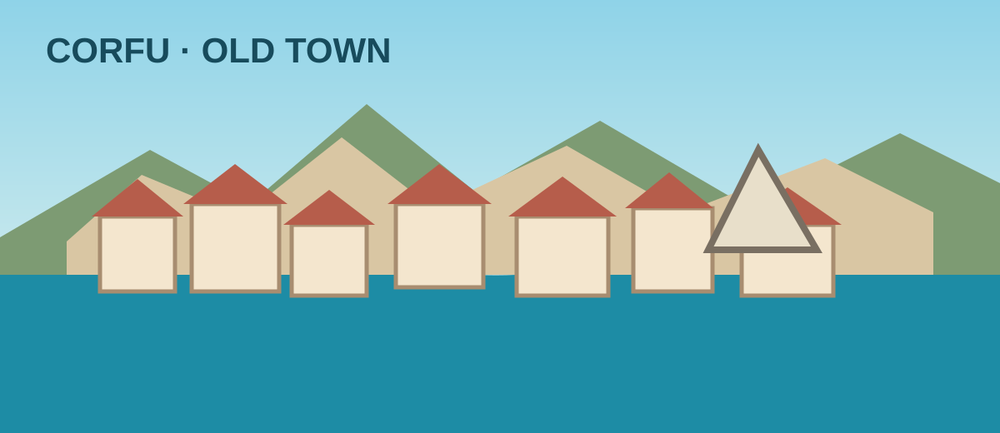
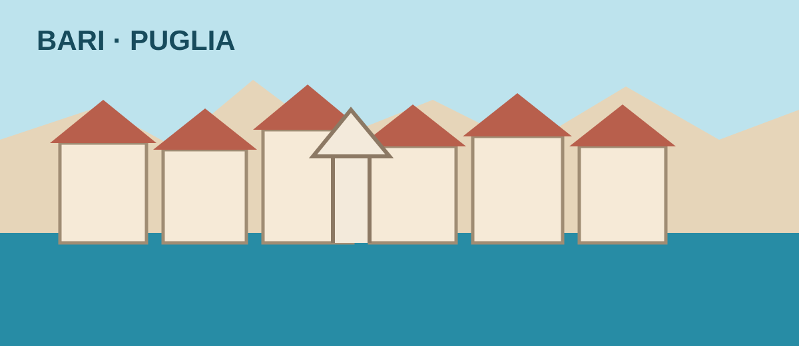
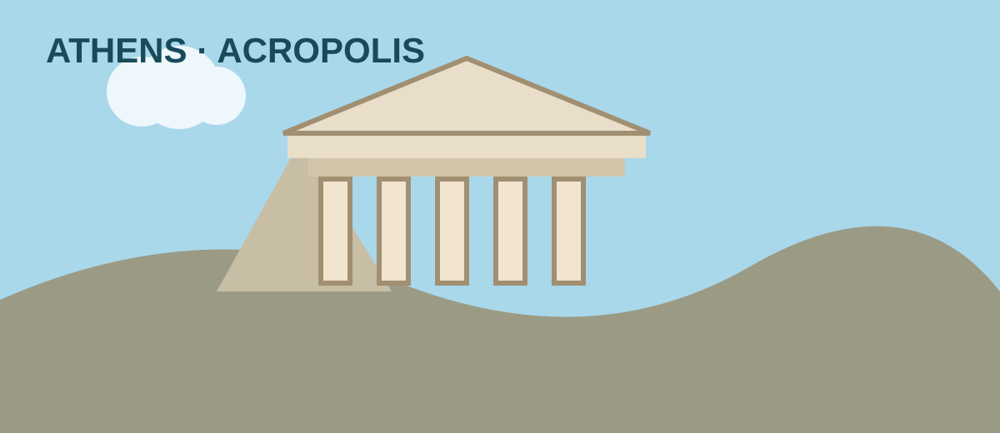
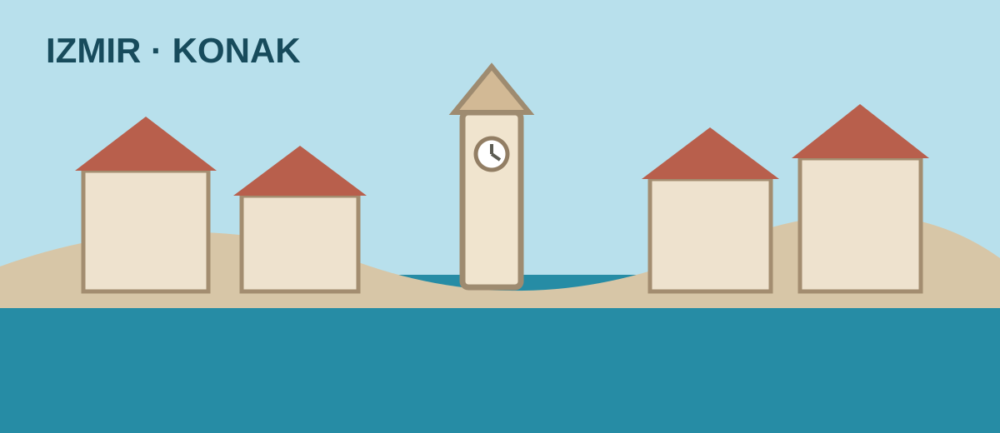

Корфу — старый город пешком
Компактный маршрут от порта к Новой крепости, через старый город, церковь Святого Спиридона, Листон и Спианаду — к Старой крепости. Лучше не перегружать день: крепость и прогулка по улочкам займут основную часть времени.
Возврат к порту: целиться на 17:30–18:00. От старого города до круизного терминала — ориентировочно 25–35 минут пешком либо короткая поездка на такси/шаттле.

Карта маршрута и точки
Что попробовать
Софрито (телятина в чесночно-винном соусе), пастицаду, бурдето, местное имбирное пиво tsitsibira. В старом городе выбирайте таверну с меню дня, а не только туристическим меню.
Практично
Неровная брусчатка и подъёмы у крепостей. В ноябре возможны дождь и ветер. В Старой крепости зимний режим обычно короче летнего; часы и билеты проверьте накануне.
Бари — старый город и фокачча
Пеший маршрут по Bari Vecchia: базилика Святого Николая, собор Сан-Сабино, улочки старого города, замок Svevo и остановка за focaccia barese. Это лучший день для знакомства с апулийской кухней и местной выпечкой.
Возврат к порту: 16:30–17:00. Старый город близко к порту, но оставьте запас на очередь/контроль и путь к нужному терминалу.

Карта маршрута и точки
Что попробовать
Focaccia barese (томат, оливки, оливковое масло), panzerotto, orecchiette alle cime di rapa, taralli. Для цели «настоящая итальянская пицца» можно выбрать пиццерию в старом городе, но фокаччу Бари пропускать не стоит.
Практично
Узкие каменные улицы могут быть скользкими после дождя. В пекарне Fiore часто бывает очередь — лучше взять фокаччу навынос. Для шести человек в ресторане желательно заранее проверить часы и возможность посадки.
Афины — Акрополь, Плака, Монастираки
Из Пирея лучше сразу ехать в центр на такси или метро, затем посетить Акрополь в первой половине дня, пройти через Плаку к Монастираки и пообедать. Не добавляйте удалённые объекты: окно стоянки короче, чем в Бари.
Возврат к порту: 15:00–15:30. При пробках предпочтительнее метро, но проверьте доступность и время переходов с учётом группы.

Карта маршрута и точки
Что попробовать
Сувлаки или гирос, греческий салат, тиропита/спанакопита, кофе. В туристических местах Плаки сравните меню и цены перед тем, как садиться.
Практично
Билеты на Акрополь покупайте только через официальный билетный портал. Каменные поверхности могут быть скользкими; удобная обувь обязательна. Проверьте правила входа и временные слоты ближе к поездке.
Измир — Конак и Кемералты
Городской маршрут без дальних выездов: площадь Конак и Часовая башня, рынок Кемералты, караван-сарай Kızlarağası Hanı, затем по времени — Агора Смирны. Рынок хорош для неспешной прогулки, кофе и местных перекусов.
Возврат к порту: 14:00–14:30. Не планируйте дальние поездки за пределы центра: отправление в 16:00.

Карта маршрута и точки
Что попробовать
Boyoz (часто с яйцом), kumru — горячий сэндвич, lokma, турецкий кофе или чай. На рынке удобно пробовать небольшими порциями.
Практично
В Кемералты много крытых проходов, но покрытие неровное и местами скользкое. Наличные лиры пригодятся для небольших покупок. Время работы отдельных лавок в ноябре может отличаться.
Общее расписание
- 11.11 — Стамбул, отправление 20:00
- 12.11 — море
- 13.11 — Корфу 12:00–19:00
- 14.11 — Бари 07:00–19:00
- 15.11 — море
- 16.11 — Пирей / Афины 07:00–17:00
- 17.11 — Измир 07:00–16:00
- 18.11 — Стамбул, прибытие 09:00